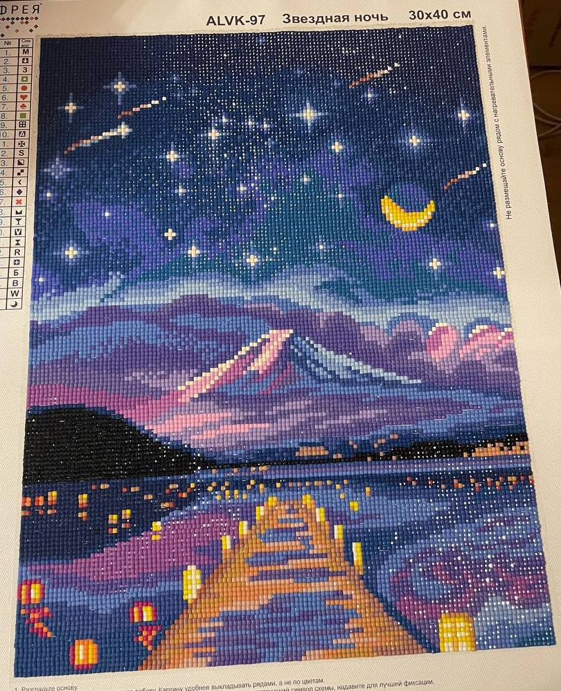

Моё хобби-Алмазная вышивка!

Алмазная вышивка, она же "Алмазная Живопись" или алмазная мозаика - это выкладка стразами красочных картин с клеевой основой
Алмазная вышивка является отличный способ расслабиться и проявить творческий потенциал. Это занятие позволяет раскрыть свою фантазию и создавать красивые шедевры.
Алмазная мозаика стала для меня не только способом релаксации, но и источником внутреннего умиротворения. Когда я занимаюсь ею, у меня нет никаких волнений или негативных мыслей. Я полностью погружаюсь в процесс и наслаждаюсь каждым шагом.
Кроме того, алмазная вышивка стала хорошей возможностью самовыражения. Так как возможностей разнообразия в алмазной мозаике огромно. Я могу выбирать различные сюжеты и мотивы, чтобы они отражали мои интересы и настроение. Благодаря этому, каждая моя работа становится отражением части моей личности и моего творческого потенциала.